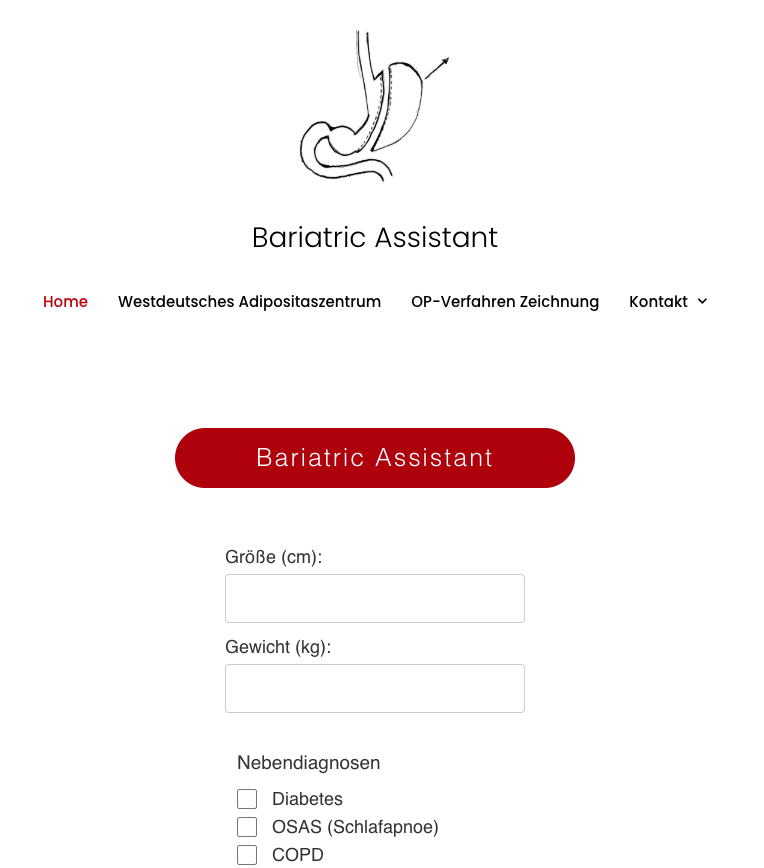

BUSY MARS
An AI-powered platform that helps curators, artists, and institutions discover underrepresented voices in the art world.
GO
DISKURS BERLIN
An independent project space I founded in Berlin, focused on curatorial experimentation, dialogue, and international exchange.
GO
BARIATRIC ASSISTANT
A practical tool developed for a medical practice to support bariatric patients with accessible, structured information.
GO